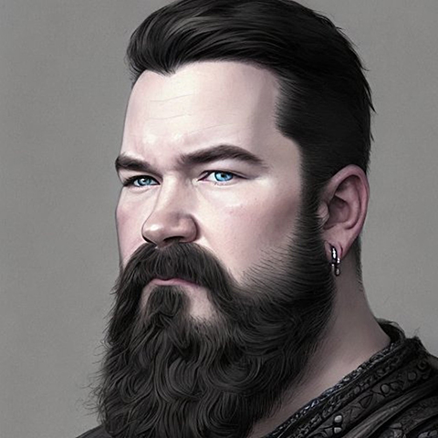

Kevin O'Haugherty

Summary
My experience with computer hardware and software goes back 30 years, and now I feel it is time to move into development.
Education
- I am a 1997 graduate of Durant High School in Plant City, Florida.
Work Experience
-
L1 Support Agent / Lead (Support Ops) - Mad Mobile
September 2023 - Present
- Handles inbound and outbound call support as well as chat and e-mail support channels
- Provides support for hardware, software, and administrative functionality for a point-of-sale system
- Troubleshoots network hardware and cabling issues, builds network maps, and supports wireless connectivity issues
- Helps build weekly schedules to indicate when breaks and lunches will be taken by the team members
- Moderates team channel to assist teammates with troubleshooting questions
- Monitors call queue and communicates needs with the team to maximize agent availability and keep SLA within acceptable margins
- Assigns cases to teammates based on skill and case load to maintain balance of individual workloads
- Communicates with Account Managers to keep everyone informed of current issue status
Skills
- Microsoft Suite
- Adobe Suite
- Windows & Mac
- Android & iOS
- Web Development
- Project Management
Awards & Certifications
- Master of HTML badge from Computer Coach
- Advanced CSS badge from Computer Coach
- Advanced JavaScript badge from Computer Coach
Other